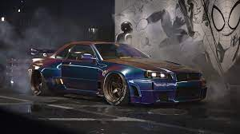
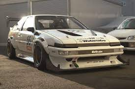
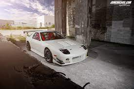
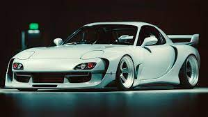
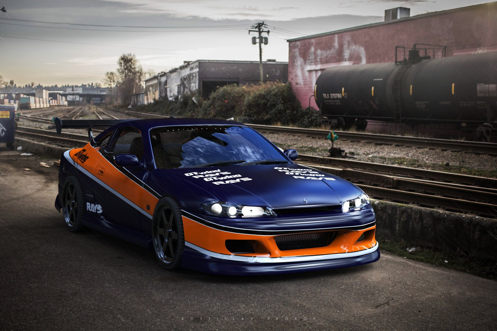
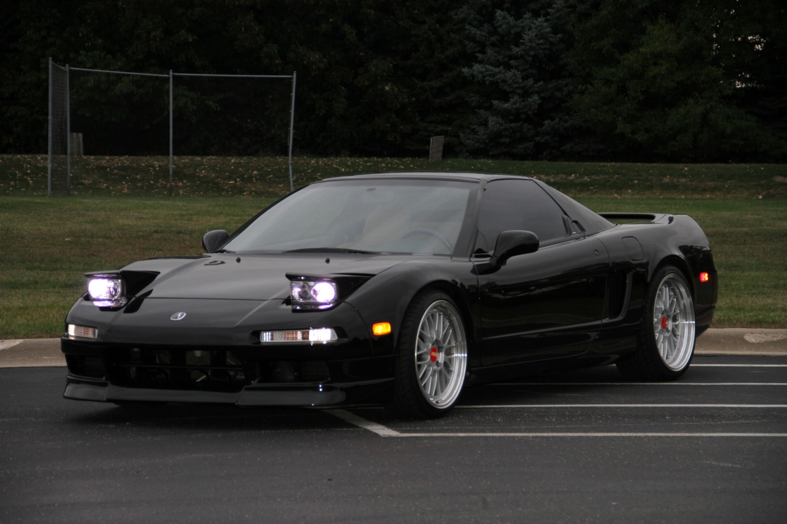

Japanese Domestic Market (JDM) merujuk pada pasar domestik di Jepang untuk kendaraan bermotor dan suku cadang yang diproduksi dan dijual di dalam negeri. Konsep JDM biasanya digunakan dalam konteks industri otomotif, tetapi dapat diterapkan pada produk lainnya juga.
1. GTR-R34

Nissan Skyline R34 GT-R diperkenalkan pertama kali pada tahun 1999 dan diproduksi hingga tahun 2002. Jadi, rentang produksi utama untuk model ini adalah antara tahun 1999 dan 2002. Selama periode ini, berbagai variasi dan edisi khusus dari R34 GT-R juga mungkin telah diproduksi.
2. AE86

Toyota AE86 adalah mobil sport kompak yang terkenal dan dihormati, terutama dalam dunia otomotif dan budaya balap Jepang.Meskipun AE86 awalnya diproduksi pada tahun 1980-an, mobil ini tetap menjadi ikon dalam dunia otomotif, dan banyak penggemar yang masih menghargai nilai historis dan karakteristik mengemudinya yang unik.
3.RX7-FC

RX-7 FC, terutama dalam varian Turbo II, masih menjadi favorit di kalangan penggemar mobil sport dan kolektor karena desain yang ikonik, performa yang solid, dan warisan balap yang kuat.dan RX7-FC diproduksi dari tahun 1985 hingga 1991
4.RX7-FD

RX-7 FD tetap menjadi salah satu ikon mobil sport Jepang yang paling diingat, dan nilai koleksinya terus meningkat seiring berjalannya waktu.dan RX7-FD diproduksi antara tahun 1992 dan 2002.
5.NISSAN SILVIA-S15

Silvia S15 tetap menjadi salah satu model yang sangat diingat di dunia otomotif, dan popularitasnya terus bertahan di kalangan penggemar mobil sport dan kolektor.Nissan Silvia S15 diproduksi antara tahun 1999 dan 2002.
6. HONDA NSX

Acura NSX, baik generasi pertama maupun generasi kedua, terus dihormati di kalangan penggemar mobil sport dan dikenang sebagai salah satu inovator di dunia otomotif.Generasi pertama Acura NSX (juga dikenal sebagai Honda NSX) diproduksi dari tahun 1990 hingga 2005.
Generasi kedua NSX diperkenalkan dan diproduksi mulai tahun 2016.